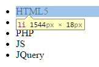
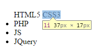

display: ; color; y opacity;
Quiero enseñaros la propiedad display ; aunque esta sea algo díficil y extraña. ¿Por qué quiero enseñarosla si es díficil? Porque tiene relación con las etiquetas que vais a aprender, por eso, vamos a ello :)
display fue una propiedad introducida en la versión CSS 2.1 (Sé que esto no es relevante, pero nunca esta de más, ¿verdad? y sirve para establecer que tipo de caja establece cada etiqueta que escribamos. En LibrosWeb (página que recomiendo) se puede que leer:
"La propiedad display es tan compleja que casi ningún navegador es capaz de mostrar correctamente todos sus valores."
Aunque esas palabras suenen duras, verás que no es tan díficil ;)
display: none;
Y... ¡BUALA! La etiqueta desapareció como un buen mago. Es evidente para que sirve el valor none, ¿verdad?El valor none hará que la etiqueta desaparezca y las etiquetas que estan debajo suban como si ahí no existiera ningun elemento. Si queremos hacer que el elemento desaparezca pero sin que ningun otro elemento se mueva, lo hariamos con la propiedad opacity cuyos valores van desde el 0 al 1, pasando por el 0.2, 0,3, etc. Siendo el 0 transparente y el 1 totalmente opaco.
display: block;
display: block; es la propiedad que viene definida en la mayoria de las etiquetas, la cual hace que esta ocupe todo el ancho de la página. Veamos un par de ejemplos:
Aunque no podamos ver la página entera del ejemplo, podemos sacar buenas conclusiones: Esto como ven es una lista la cual se hace con una serie de etiquetas que podemos ver en la página anterior si no la han leido todavía, les recomendaría que primero vieran como se crea una lista para poder entenderlo mejor :) Pues lo que decía, esto es una lista.
<ul>
<li>HTML5</li>
<li>CSS3</li>
<li>PHP</li>
<li>JS</li>
<li>JQuery</li>
</ul>
Por defecto las etiquetas <ul> e <li> llevan la propiedad display:block;
¿Cómo es eso de que por defecto lleva una propiedad?
A mi me sonó un poco chocante cuando lo estudié por primera vez, pero es cierto, los navegadores tienen una serie de estilos definido por defecto los cuales pueden o no variar entre diferente navegadores, normalmente suelen ser los mismos pero en algunos casos cambia.
Como iba diciendo, las dos etiquetas llevan la propiedad display: block; por defecto, lo que quiere decir que la caja imaginaria que contiene la palabra HTML5 (Como en el ejemplo) va a ocupar todo el espacio posible por lo que ninguna otra etiqueta se puede poner a la derecha de él. Tal vez te preguntes, y si no deberías de empezar a preguntartelo, como es que las barras de menú tipicas para navegar en algunas web suelen se horizontales. Abajo la respuesta ;)
display: inline;
display:inline; hace que la caja ocupe lo que ocupa la palabra, ni un pixel mas ni menos.

<ul>
<li style="display: inline">HTML5</li>
<li style="display: inline">CSS3</li>
<li>PHP</li>
<li>JS</li>
<li>JQuery</li>
</ul>
Como ves, hemos mezclado tres etiquetas <li> que llevan la propiedad display: block; con otras dos <li> que llevan la propiedad display: inline.
Puedes ver como las dos etiquetas <li> que llevan la propiedad inline, estan en una misma linea, ya que sus cajas solo ocupan lo que ocupa la palabra que las contiene y no todo el ancho de la página. Así es como se hacen los menú horinzontales ;)
display: inline-block;
Quisiera ser sincero con vosotros, conocía el valor inline-block, pero me ha costado entenderlo para poder explicaroslo, espero hacerlo bien...
Inline-block es un valor que le dice a la caja que se comporte como un inline y como un block, que sea un hibrido de los dos. El valor Block puede llevar otras propiedades como width, pero inline no; si inline no tiene ningun texto la caja será 0px, pero si usamos el atributo block con un width de 20px, será 20px. Inline-block recoje ambas cosas de inline-block, no ocupa todo el ancho de la página (Sí, no lo ocupa aunque ni pongamos el width) y podemos usar el width, no como con inline.
Por supuesto sobra decir que hay muchos más valores para la propiedad display pero que no son básicos ni mucho menos, si te interesa más el tema de los display siempre puedes Googlear un poco ;)
Creo que arriba en el titulo, decía algo de la propiedad color:; esta como bien se sabe y es muy obvio, sirve para darle color a un texto.Por supuesto es la propiedad que estoy usando para colorear estas letras, y esta es su estructura:
color: black;
color: #000;
color: rbg(0,0,0);
color: rbga(0,0,0,0);
Tenemos varias opciones para colorear nuestro texto, podemos poner el nombre del color, como por ejemplo black (En inglés por supuesto) y el navegador pondrá el color negro. Podemos hacerlo con colores html que se compone de una almohadilla con 6 digitos, aunque aquí solo salga #000, en realidad es #000000 pero se acorta, al igual que en el blanco (#ffffff es #fff). La diferencia entre rgb y rgba es que rgba habilita la transparencia en su ultima casilla, ese ultimo cero va desde 0 hasta 1 para habilitar la transparencia.